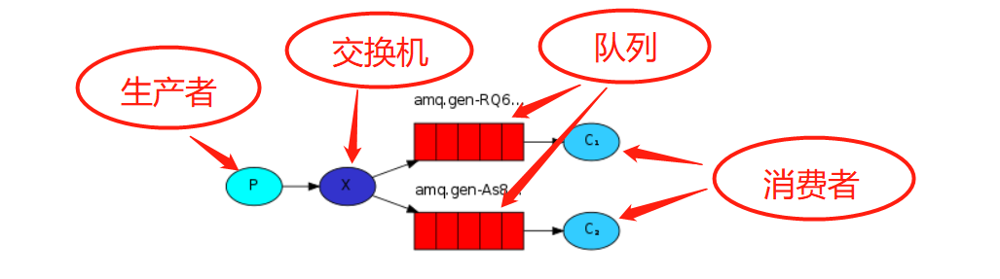
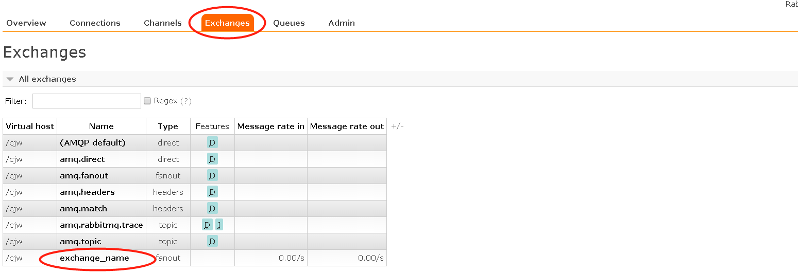
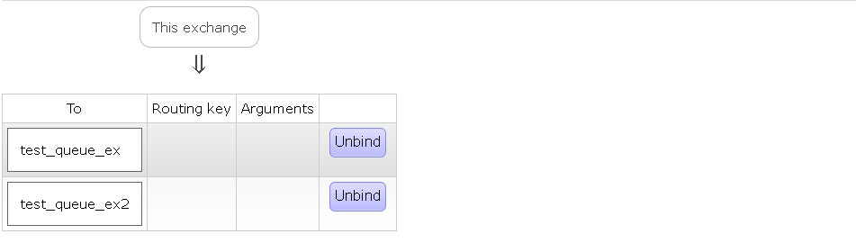
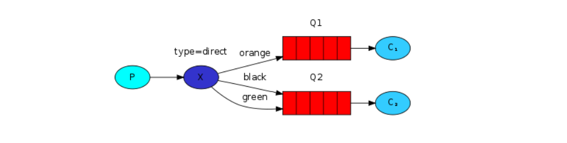
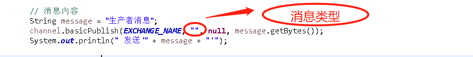
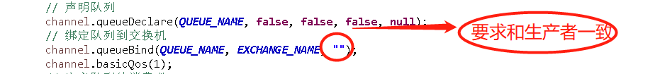

在说正题之前先解释一下交换机模式是个笼统的称呼，它不是一个单独的模式（包括了订阅模式，路由模式和主题模式），交换机模式是一个比较常用的模式，主要是为了实现数据的同步。
首先，说一下订阅模式，就和字面上的意思差不多主要就是一个生产者，多个消费者，同一个消息被多个消费者获取，先看一下官网的图示

整体执行过程就和图里一样，生产者把消息发送到交换机，然后队列绑定到交换机，消息由交换机发送到队列，每一个队列都有一个各自的消费者。这样
就实现了一个消息被多个消费者所获取，而且如果有新的消费者加入直接绑定队列到交换机就可以了，大大的降低了系统间的耦合度。还有一点要注意的就是
当我们把消息发送到一个没有队列绑定的交换机时，消息就会丢失，因为消息只能存储在队列，而交换机只做交换，不做存储！
生产者代码：
public class Send {
private final static String EXCHANGE_NAME = "exchange_name"; //交换机名称
public static void main(String[] argv) throws Exception {
// 获取MQ连接和通道
Connection connection = ConnectionUtil.getConnection();
Channel channel = connection.createChannel();
// 声明交换机
channel.exchangeDeclare(EXCHANGE_NAME, "fanout");
// 消息内容
String message = "生产者消息";
channel.basicPublish(EXCHANGE_NAME, "", null, message.getBytes());
System.out.println(" 发送 '" + message + "'");
channel.close();
connection.close();
}
}
消费者一号代码：
public class Recv {
private final static String QUEUE_NAME = "test_queue_ex";
private final static String EXCHANGE_NAME = "exchange_name";
public static void main(String[] argv) throws Exception {
Connection connection = ConnectionUtil.getConnection();
Channel channel = connection.createChannel();
// 声明队列
channel.queueDeclare(QUEUE_NAME, false, false, false, null);
// 绑定队列到交换机
channel.queueBind(QUEUE_NAME, EXCHANGE_NAME, "");
channel.basicQos(1);
// 定义队列的消费者
QueueingConsumer consumer = new QueueingConsumer(channel);
// 监听队列，手动返回完成
channel.basicConsume(QUEUE_NAME, false, consumer);
// 获取消息
while (true) {
QueueingConsumer.Delivery delivery = consumer.nextDelivery();
String message = new String(delivery.getBody());
System.out.println(" 消费者一号 '" + message + "'");
Thread.sleep(10);
channel.basicAck(delivery.getEnvelope().getDeliveryTag(), false);
}
}
}消费者二号代码：
public class Recv2 {
private final static String QUEUE_NAME = "test_queue_ex2";
private final static String EXCHANGE_NAME = "exchange_name";
public static void main(String[] argv) throws Exception {
Connection connection = ConnectionUtil.getConnection();
Channel channel = connection.createChannel();
channel.queueDeclare(QUEUE_NAME, false, false, false, null);
channel.queueBind(QUEUE_NAME, EXCHANGE_NAME, "");
channel.basicQos(1);
QueueingConsumer consumer = new QueueingConsumer(channel);
channel.basicConsume(QUEUE_NAME, false, consumer);
while (true) {
QueueingConsumer.Delivery delivery = consumer.nextDelivery();
String message = new String(delivery.getBody());
System.out.println("消费者二号 '" + message + "'");
Thread.sleep(10);
channel.basicAck(delivery.getEnvelope().getDeliveryTag(), false);
}
}
}运行代码之后可以看到

生产者发送的消息已经存储在了交换机之中。查看绑定关系如下图所示：

所以，可以得出结论一个消息被多个消费者所消费。订阅模式也存在着缺陷有时并不是所有数据都需要同步，所以用订阅模式来做数据同步并不合理。于是就用到了路由模式。
官网图示如下：

和订阅模式比较类似，只是type变成了direct类型，路由模式也是先由生产者发送消息到交换机，然后在根据绑定键来判断消息发送到哪一个交换机。如下图：

和订阅模式的区别就是生产者发送消息时要先声明消息的类型，也就是说消息会被哪类消费者所获取

消费者和生产者保持一个类型的时候，就可以接收到对应生产者所发送的消息了。从而可以过滤掉不需要的消息类型。
主题模式个人感觉就和sql语句里的like关键字一样，不用保证消息类型一样，只要保证其相似就可以接收消息了，相比于路由模式，
主题模式匹配率比较低，但是功能确提高了很多，减少了路由key的创建，如图所示：
type变成了topic类型，至于其他方面和路由模式一样就不多说了。